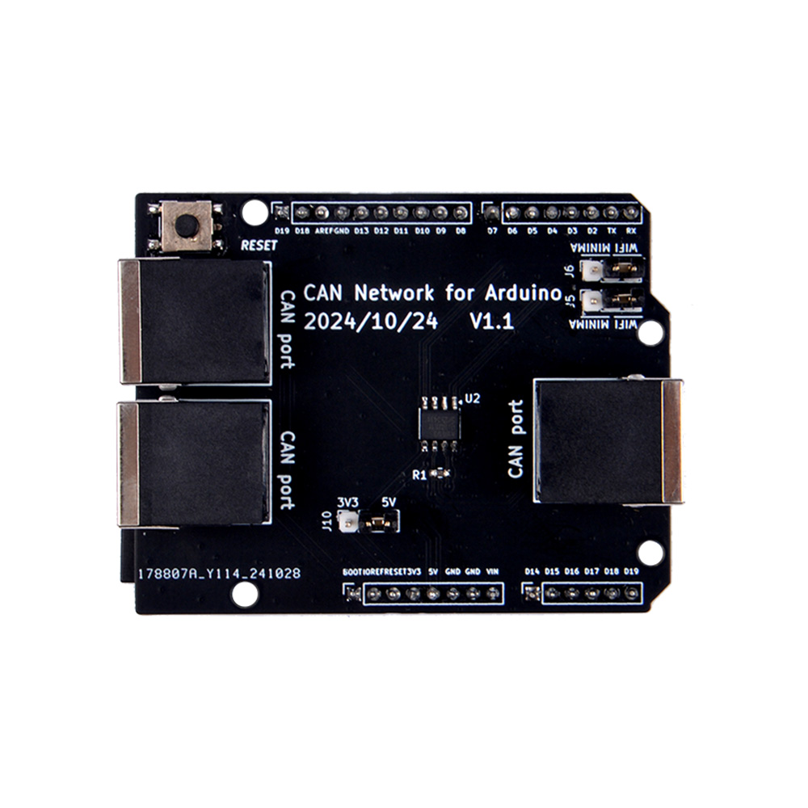

CAN Node Controller Board for Arduino UNO R4
- Product SKU: EP-0243
- Product Name: CAN Node Controller Board for Arduino UNO R4
Description
CAN Node Controller Board for Arduino UNO R4 series, it is actually an Arduino UNO R4 Series CAN Node Controller Shield. This is a shield specifically designed for the Arduino UNO R4 series. It can be plugged into the Arduino UNO R4 series motherboard, much like other shields such as Minima and Wi-Fi, using the CAN interface of the Arduino UNO R4 series to communicate with external modules.
Features
- Compatibility: Compatible with Arduino UNO R4 series, including models like Minima and Wi-Fi.
- Communication Interface: Utilizes the CAN interface of the Arduino UNO R4 series to communicate with external modules.
- Ethernet Connection: Features an Ethernet interface designed for anti-misinsertion, ensuring reliable and error-free connections.
- Easy Deployment: Facilitates easy deployment in smart home applications due to its user-friendly design.
- System Core: Acts as the central unit of the system, managing data from various sensors.
- Data Analysis: Responsible for data analysis and decision-making for subsequent actions based on sensor inputs.
- Multiple Ports: Equipped with three Ethernet ports, enabling the connection of multiple sensors or devices.
- Sensor Integration: Supports the integration of various sensors, such as temperature sensors, for monitoring environmental conditions in smart homes.
- Daisy-Chaining Capability: Allows for the near-unlimited daisy-chaining of sensors on the CAN bus, expanding the system's reach and capabilities.
- Versatile Sensor Deployment: Ideal for deploying in various smart home locations, such as kitchens or near water pipes, for temperature monitoring and other environmental sensing needs.
Applications
- Smart Home Sensors: Can be used as a sensor device in smart homes, deployed in kitchens or next to water pipes for temperature monitoring.
- Arduino UNO R4 Series: Compatible with the Arduino UNO R4 series for seamless integration and functionality.
This shield is a powerful addition to the Arduino UNO R4 series, enhancing its capabilities in smart home automation and sensor management.
Gallery
